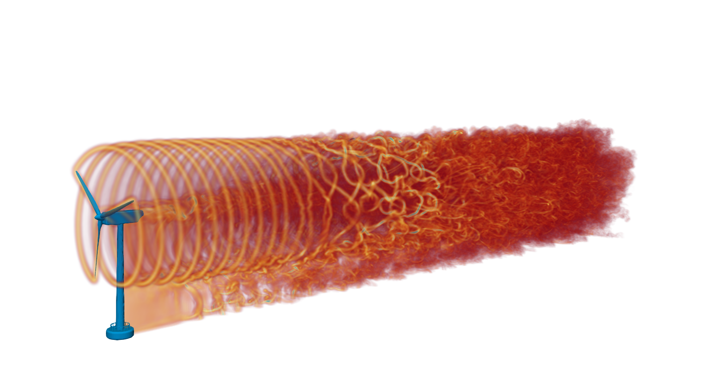
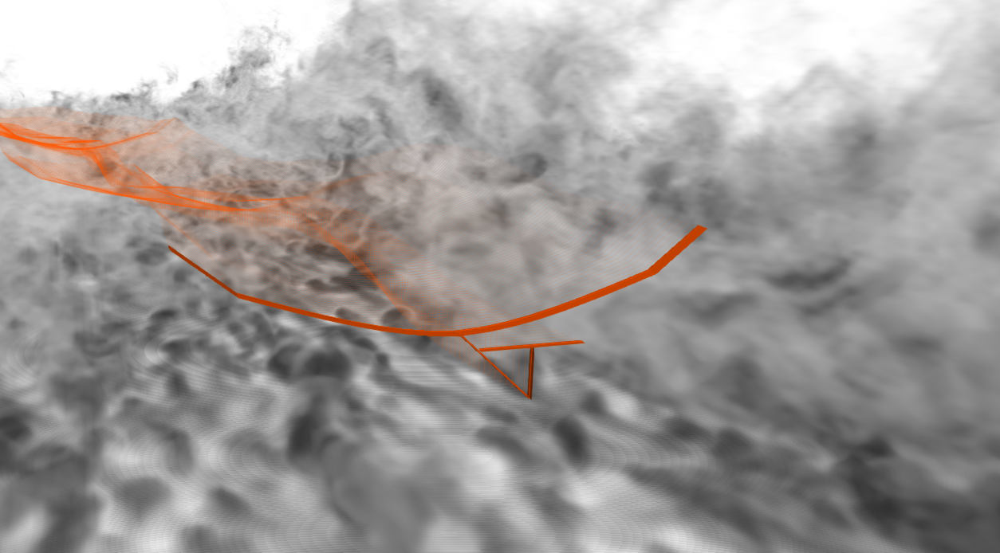

Research¶
My research focuses on the development and validation of novel numerical models in wind energy applications. Details of certain application-related research streams can be expanded below, including selected publications.
Wind-wave interaction
My recent research focus has been on developing numerical models which can be used to simulate wind-wave interactions and better understand the dynamics of the marine atmospheric boundary layer (MABL). This includes the implementation of a waving boundary condition in nalu-wind which enables both one-way and two-way couplings. The new model has been used for turbulence-resolving simulations of turbulence over idealised or and realistic oceanic waves.
Direct-numerical simulation of turbulent flow over moving Stokes waves using nalu-wind and the novel waving boundary condition.
High-fidelity, physics-based modelling of offshore wind turbines
During my PhD, I developed a new wind farm simulator, WInc3D, based on the open-source code
incompact3d. The model includes a native actuator line model, it has been validated by a number of cases and scaled to hundred of thousand of processors in many diffent HPC systems.

Turbine wake forming behind a laboratory-scale wind turbine. Simulations utilise high order compact finite difference schemes and the concept of spectral vanishing viscosity (SVV).
 Wakes within a large-scale wind farm consisting of 16 5MW-NREL turbines. Photo won the 2020 ARCHER image competition prize.
Wakes within a large-scale wind farm consisting of 16 5MW-NREL turbines. Photo won the 2020 ARCHER image competition prize.
{kind=link}
Atmospheric turbulence and very flexible aircraft (VFA)
Together with Professor Rafael Palacios and Dr Alfonso del Carre we undertook aero-servo-elastic simulations of a very flexible aircraft in low-altitudes using different atmospheric turbulence models. The results suggest the need to use high-fidelity LES data for validation purposes as well as the need to revisit current practices and standards. 
{kind=link}
Direct and large-eddy simulations of turbulent flows
I am interested in numerical models that will allow us to advance our understanding of turbulent flows. This includes the development and validation of higher-order numerical schemes as well as physics-based SGS models for large-eddy simulations. To this end, I have been part of the developing team of the Xcompact3D framework, including its portability to future exascale HPC systems.